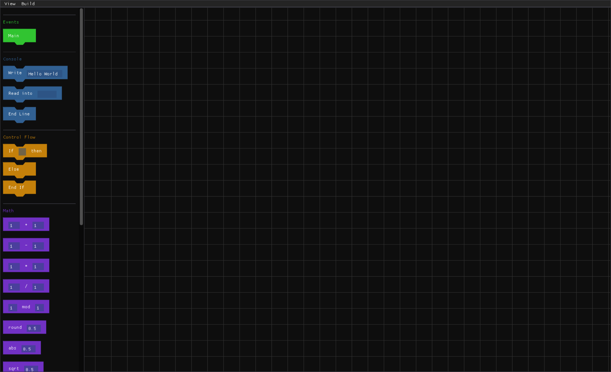
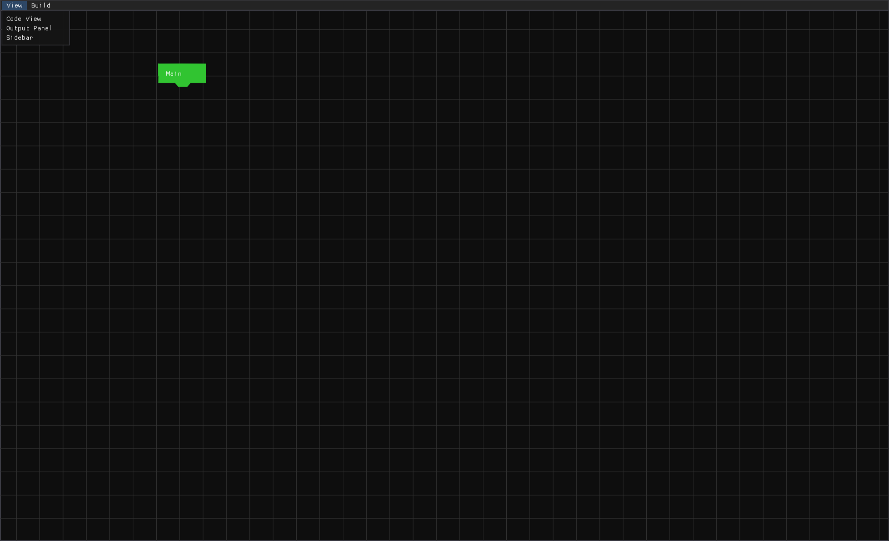
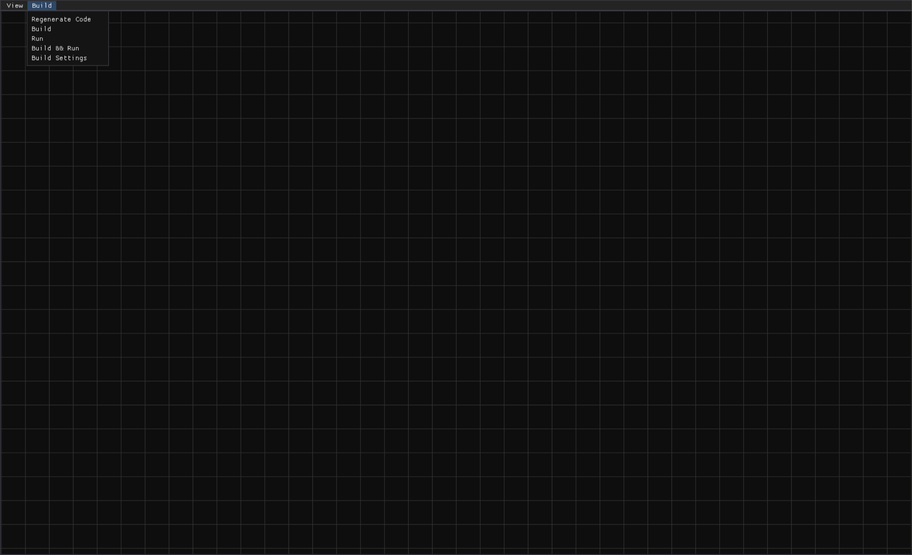
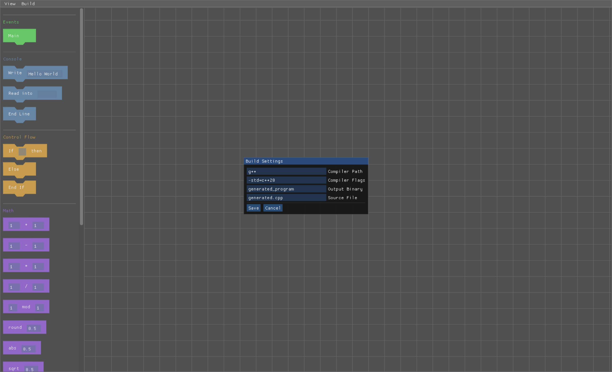
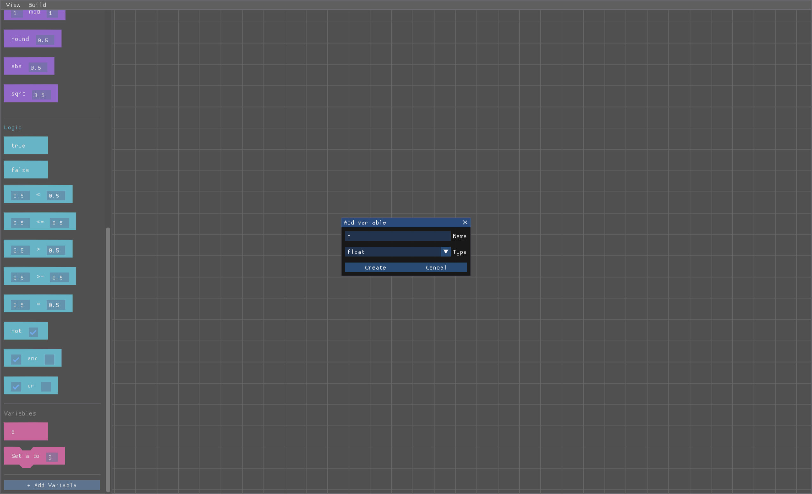
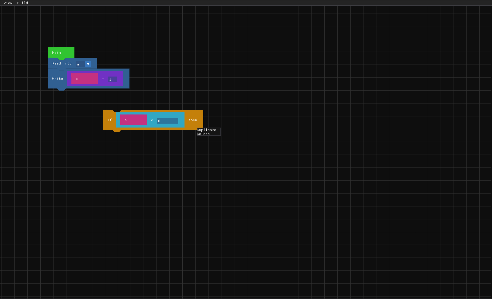
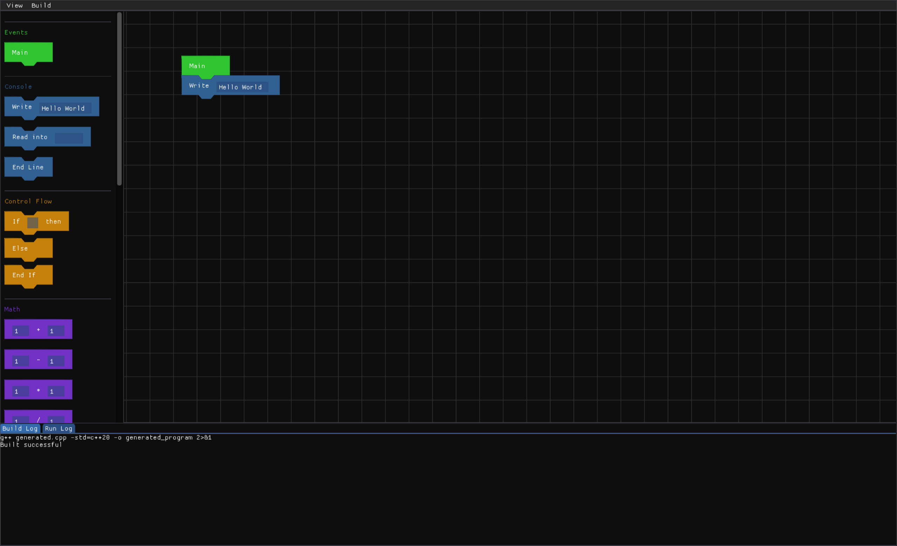
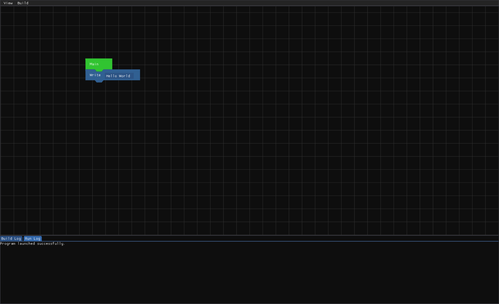
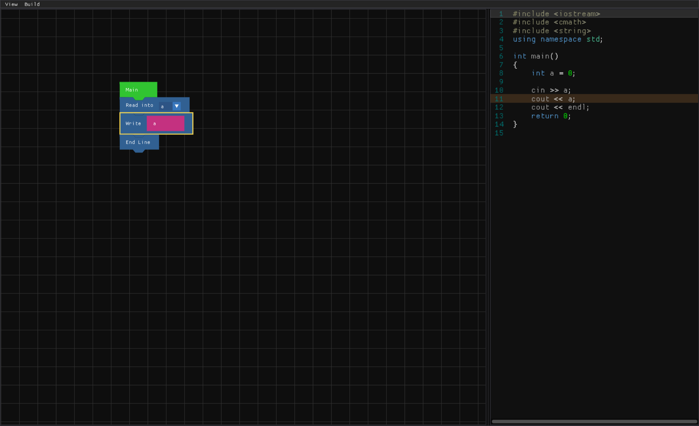
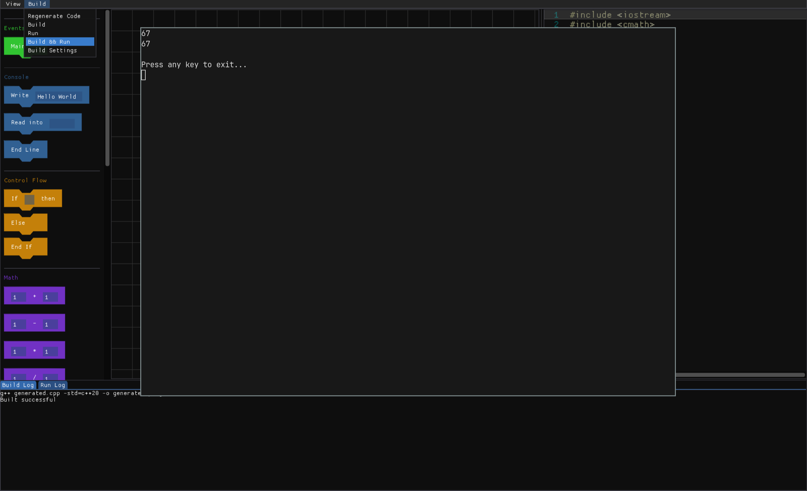

Programarea vizuală prin blocuri a câștigat o popularitate semnificativă în educație, datorită accesibilității sale față de sintaxa tradițională. Cele mai cunoscute soluții existente sunt Scratch (MIT Media Lab) și Blockly (Google). Ambele sunt instrumente valoroase, însă vin cu o limitare fundamentală: nu oferă nicio legătură directă între blocurile vizuale și codul scris, ceea ce face tranziția spre un limbaj de programare real dificilă și abruptă.
PVB (Programare Vizuală prin Blocuri) a apărut tocmai din această nevoie: un instrument care funcționează ca o punte între gândirea vizuală și sintaxa C++, permițând utilizatorului să vadă în timp real echivalentul textual al construcțiilor sale vizuale.
| Caracteristică | Scratch | Blockly | PVB |
|---|---|---|---|
| Programare prin blocuri | ✓ | ✓ | ✓ |
| Compilare și rulare integrată | ✓ | ✓ | ✓ |
| Generare cod real (C++) | ✗ | ✗ | ✓ |
| Source map (blok ↔ linie cod) | ✗ | ✗ | ✓ |
| Funcționare offline / nativă | ✗ | ✗ | ✓ |
| Performanță | ✗ | ✗ | ✓ |
| Acces la internet necesar | ✓ | ✓ | ✗ |
| Dimensiune aplicație | ~web | ~web | 9 MB |
Spre deosebire de Scratch și Blockly — soluții web care necesită browser și conexiune la internet — PVB este o aplicație nativă, complet offline, cu o amprentă de doar 9 MB. Aceasta o face ideală pentru utilizare în laboratoare școlare sau pe echipamente fără acces la internet.
Publicul țintă include profesori de informatică care predau C++ și doresc o metodă vizuală de introducere a conceptelor, dar și elevi și studenți aflați la primii pași în programare.
Dezvoltarea PVB a parcurs mai multe etape iterative înainte de a ajunge la forma actuală. Procesul a demarat cu o cercetare a posibilităților tehnice și s-a materializat printr-o serie de prototipuri:
Alegerea tehnologiilor a pornit de la trei priorități: performanță nativă, amprentă minimă și extensibilitate. Fiecare componentă a stack-ului tehnic a fost aleasă deliberat:
C++ a fost ales pentru performanță și control complet asupra memoriei — esențial pentru o aplicație nativă care manipulează structuri de date complexe (grafuri de blocuri, AST-uri). Compilat cu standardul C++20, proiectul beneficiază de funcționalități moderne ale limbajului.
Dear ImGui este o bibliotecă UI immediate-mode, lightweight și open-source, ideală pentru aplicații de tip tool. Aceasta gestionează randarea interfeței, dar logica blocurilor — drag, snap, conexiuni, expresii — a fost implementată integral de la zero, ImGui servind exclusiv ca layer de randare. Randarea este accelerată hardware prin backend-ul de OpenGL, ceea ce asigură fluiditate chiar și cu zeci de blocuri pe canvas.
ImGuiColorTextEdit este utilizat pentru panoul de vizualizare a codului generat, cu colorare sintactică C++. Am extins biblioteca cu un patch custom care permite evidențierea unei întregi linii de cod — funcționalitate necesară pentru implementarea source map-ului (legătura vizuală bloc ↔ linie).
CMake gestionează sistemul de build cross-platform, permițând compilarea pe Linux și Windows fără modificări ale codului sursă. Toate dependențele sunt open-source și incluse în proiect.
Aplicația adoptă o arhitectură minimală și modulară, cu doar 13 fișiere sursă. Fiecare modul are o responsabilitate clară, facilitând înțelegerea și extinderea codului:
Generarea codului se realizează în două etape: blocurile de pe canvas sunt mai întâi structurate într-un AST (Abstract Syntax Tree), care este apoi traversat de codegen pentru a produce codul C++. Această separare aduce un avantaj esențial: adăugarea unui nou limbaj țintă (ex. Python) necesită doar un nou modul codegen, fără a modifica logica blocurilor.
Unul dintre punctele forte ale PVB este amprenta extrem de redusă: binarul complet compilat ocupă doar 9 MB, incluzând toate resursele. Aceasta este posibilă datorită alegerii Dear ImGui — o bibliotecă minimalistă care nu aduce dependențe externe grele — și a backend-ului OpenGL, care delegă randarea direct GPU-ului.
PVB este o aplicație de desktop offline, fără comunicare în rețea, ceea ce elimină o întreagă categorie de vulnerabilități. Securitatea este asigurată prin mai multe mecanisme:
Logger centralizat (log.cpp): Un sistem de logging a fost utilizat pe parcursul întregii dezvoltări pentru a trasa comportamentul aplicației în toate modulele. Acesta facilitează identificarea rapidă a erorilor și oferă trasabilitate completă în sesiunile de debugging.
Build Output și Run Output: Panoul de output din aplicație (Build Log și Run Log) informează utilizatorul în timp real despre rezultatul compilării și execuției. Erorile de compilare returnate de compilator sunt capturate și afișate lizibil, permițând utilizatorului să înțeleagă ce a mers greșit fără acces la terminal.
Validarea intrărilor: Câmpurile editabile din blocuri (ex. valori numerice, nume de variabile) sunt validate în cadrul interfeței pentru a preveni generarea de cod invalid sau scenarii neprevăzute în codegen.
Proiectul a fost testat pe două platforme majore: Linux și Windows, asigurând portabilitate completă fără modificări de cod. Sistemul de build CMake permite compilarea cross-platform din aceeași bază de cod.
PVB este o aplicație nouă, aflată în stadiu activ de dezvoltare. Cu toate că baza de utilizatori este momentan limitată la cercul de beta-testeri, feedback-ul primit a validat conceptul central: asocierea vizuală dintre blocuri și codul C++ generat este intuitivă și reduce semnificativ curba de învățare față de scrierea directă a codului.
Roadmap — funcționalități planificate:
Proiectul folosește Git cu repository public pe GitHub. Istoricul commit-urilor este structurat după o convenție de denumire clară, inspirată din Conventional Commits:
Această structură permite urmărirea clară a evoluției proiectului și identificarea rapidă a commit-ului care a introdus o anumită funcționalitate sau modificare. Stările intermediare ale proiectului sunt accesibile prin istoricul Git, facilitând revenirea la orice versiune anterioară.
Interfața PVB a fost concepută pentru claritate și eficiență, punând utilizatorul în contact direct cu blocurile fără elemente decorative inutile. Un aspect esențial: logica și randarea blocurilor au fost implementate integral de la zero, folosind ImGui exclusiv ca strat de randare. Nu există nicio bibliotecă de third-party pentru logica de drag & drop, conexiuni sau expresii.
Aplicația se structurează în două zone principale, vizibile simultan:

Interfața respectă principii clasice de UI: consistență vizuală (fiecare categorie de blocuri are o culoare distinctivă menținută peste tot), feedback imediat (blocurile se conectează vizibil), și densitate informațională controlată (panoul de cod și output sunt opționale și pot fi ascunse).
Fiecare componentă a interfeței a fost gândită pentru a minimiza fricțiunea și a maximiza viteza de lucru:
Meniul superior (Top Bar)
Meniul de sus oferă acces rapid la toate acțiunile principale:



Sidebar-ul — Paleta de blocuri
Sidebar-ul este organizat în categorii cromatice distincte, fiecare cu o culoare proprie pentru recunoaștere vizuală rapidă:
main())

Canvasul — Zona de lucru

Panoul de Output


Exemplu complet: de la blocuri la C++
Secvența de blocuri de mai jos — Main → Read into a → Write a — este unul din cele mai simple programe posibile: citește un număr și îl afișează înapoi.
Codul C++ generat automat:
#include <iostream> #include <cmath> #include <string> using namespace std; int main() { int a = 0; cin >> a; cout << a; cout << endl; return 0; }


Proiectul folosește exclusiv biblioteci open-source. Toate resursele utilizate sunt enumărate mai jos:
Combinația C++ + Dear ImGui + OpenGL oferă maximul de performanță nativă la o amprentă minimă (9 MB total). Alternativele web (Electron, Qt WebEngine) ar fi adus un overhead de sute de MB și o dependență de browser sau runtime. CMake asigură portabilitatea compilării fără modificări de cod, iar ImGuiColorTextEdit economisește implementarea unui editor de text de la zero, permițând concentrarea efortului pe funcționalitățile centrale.
PVB rezolvă o problemă reală din educația de informatică: tranziția bruscă de la gândirea vizuală la sintaxa textuală. Cred că un instrument care face această tranziție gradual - lăsând utilizatorul să vadă codul C++ în timp ce construiește vizual - poate reduce teama față de sintaxa complexă și accelera procesul de învățare. Potențialul este real, iar feedback-ul primit de la beta-testeri confirmă că asocierea vizuală funcționează.